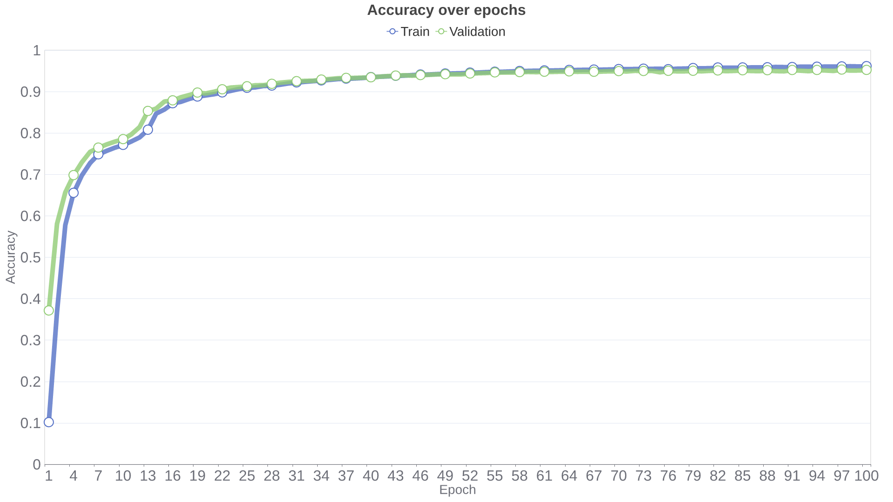
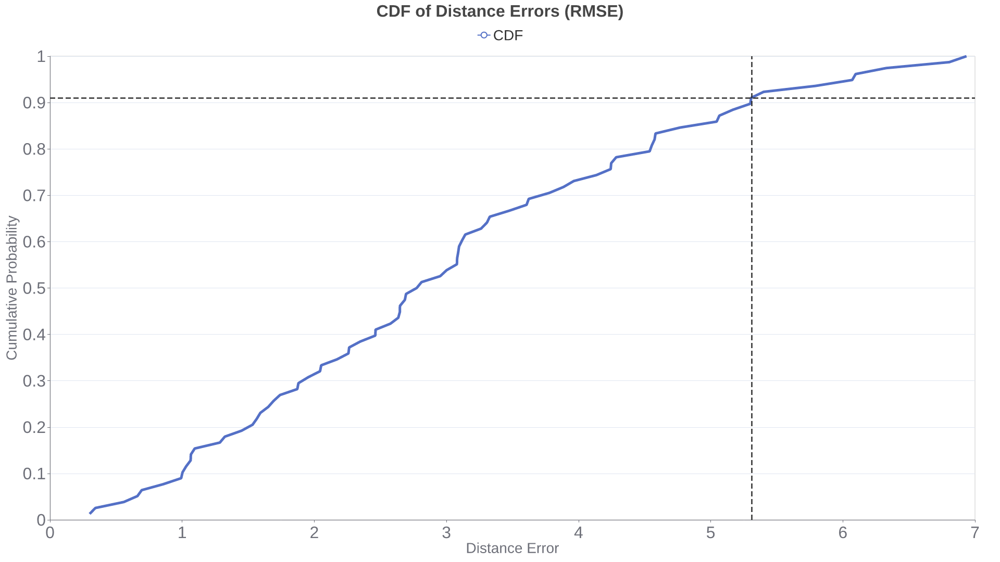

Project DNN From Scratch
sourceThis project implements a deep neural network (DNN) from scratch in Rust, focusing on two key experiments: image classification with the MNIST dataset and signal strength-based predictions using an RSSI dataset. The project demonstrates building and training a neural network without relying on external machine learning libraries.
§ 🚀 Features
- Custom Neural Network Implementation: Build and train DNNs using only Rust libraries and custom modules.
- Examples for Two Experiments:
- MNIST Dataset: Handwritten digit classification.
- RSSI Dataset: Analysis and predictions based on signal strength data.
- Modular Codebase: Cleanly separated concerns such as activation functions, loss computation, and neural network architecture.
- Visualization: Generate reports and plots to visualize experiment results.
§ 📂 Directory Structure
dnn-from-scratch/
├── README.md # Project overview and instructions
├── Cargo.toml # Project dependencies and configuration
├── LICENSE # License information
├── assets/ # Datasets and auxiliary data
│ ├── mnist/
│ │ ├── x_test.npy # MNIST test images
│ │ ├── x_train.npy # MNIST training images
│ │ ├── y_test.npy # MNIST test labels
│ │ └── y_train.npy # MNIST training labels
│ └── rssi/
│ └── rssi-dataset.csv # RSSI dataset
├── dnn_from_scratch/ # Core library for the neural network
│ ├── Cargo.toml # Library-specific dependencies
│ └── src/
│ ├── activation.rs # Activation functions
│ ├── fully_connected.rs # Fully connected layer module
│ ├── lib.rs # Entry point for the library
│ ├── loss.rs # Loss functions
│ ├── neural_network.rs # Neural network definition
│ ├── optimizer.rs # Optimizer implementations (e.g., Adam)
│ ├── report.rs # Reporting and result output
│ ├── utils.rs # Utility functions for regression/classification
│ └── weights_initializer.rs # Weight initialization strategies
└── src/ # Main application for experiments
├── main.rs # Entry point for the executable
├── mnist_experiment/ # MNIST Experiment-related modules
│ ├── dataset_setup.rs # MNIST dataset preprocessing
│ ├── mod.rs # MNIST Experiment module entry point
│ └── plot.rs # Plotting results for MNIST Experiment
└── rssi_experiment/ # RSSI Experiment-related modules
├── dataset_setup.rs # RSSI dataset preprocessing
├── mod.rs # RSSI Experiment module entry point
└── plot.rs # Plotting results for RSSI Experiment
§ 🛠️ Getting Started
To build and run the experiments, follow these steps:
Prerequisites
- Install Rust: rust-lang.org
Clone the Repository
git clone https://github.com/akaTsunemori/dnn-from-scratch.git
cd dnn-from-scratchBuild the Project
cargo build --releaseRun Experiments
cargo run --release§ 📚 Documentation
View detailed API documentation at this page, or generate it locally:
cargo doc --release --workspace --no-deps --target-dir=docs§ 🧪 Datasets
-
MNIST Dataset:
-
Stored in
assets/mnist/. -
Preprocessed as
.npyfiles for seamless integration.
-
Stored in
-
RSSI Dataset:
-
Found in
assets/rssi/rssi-dataset.csv. - Contains signal strength data and coordinates (X, Y) for analysis.
-
Found in
§ 📈 Results & Reporting
Each experiment generates reports and plots showcasing:
- Training history.
- Model performance metrics (e.g., accuracy for MNIST, CDF of RMSE for RSSI).
Plots and reports are saved in the
output/ folder. You can check a preview
of the expected results below by clicking to reveal
the contents.
MNIST Experiment
Preview of training history:
Epoch 1/100 | Train: Loss 2.0665, Accuracy 0.1013 | Test: Loss 1.9560, Accuracy 0.3710
(...)
Epoch 100/100 | Train: Loss 0.1369, Accuracy 0.9609 | Test: Loss 0.1517, Accuracy 0.9519Output plot:
RSSI Experiment
Preview of training history:
Epoch 1/2500 | Train: Loss 18046.3999, Error 134.3368 | Test: Loss 21310.2716, Error 145.9803
(...)
Epoch 2500/2500 | Train: Loss 5.5695, Error 2.3599 | Test: Loss 5.8578, Error 2.4202Output plot:
§ 📜 License
Licensed under the MIT License.
§ 🤝 Contributing
Contributions are welcome! Feel free to fork the repository and submit a pull request.
- Fork the repo.
-
Create a new branch (
git checkout -b feature-name). -
Commit your changes (
git commit -m "Add feature"). -
Push to the branch (
git push origin feature-name). - Open a pull request.
§ 📧 Contact
Create an issue for any inquiries or support.
Enjoy building your neural networks from scratch! 🎉